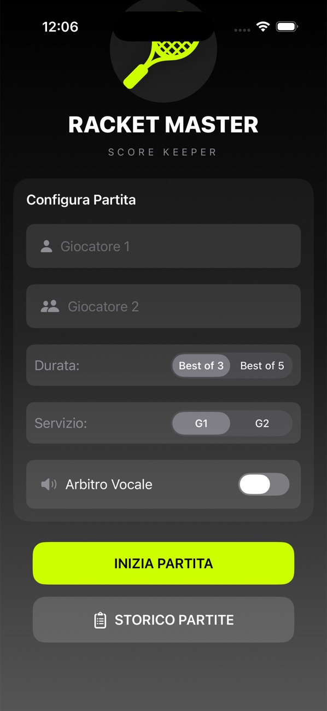
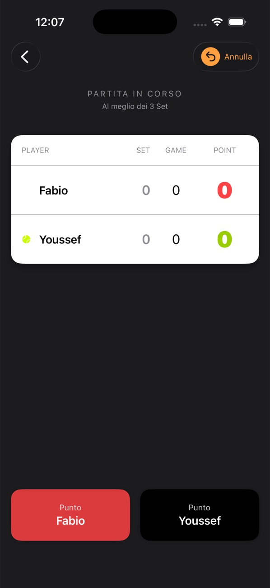

RacketMaster
Segnapunti per il tennis su iPhone e Apple Watch, da un concept di Fabio Bernardi. Ho aggiunto l'arbitro vocale con AVFoundation, battito e calorie con HealthKit e lo storico delle partite.